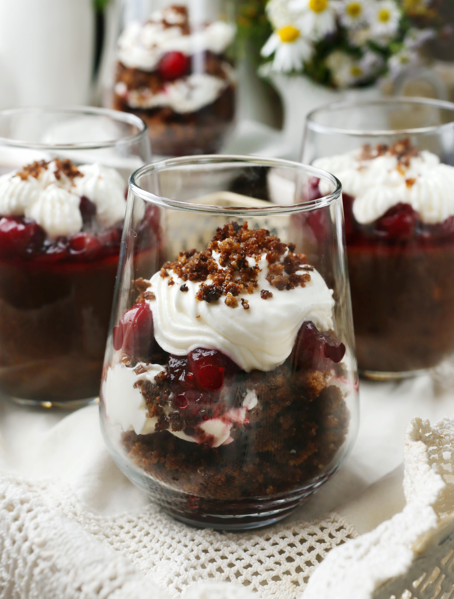

Несмотря на название, «хлебный суп» — это известный латышский десерт, который готовится из подсушенных в духовке или на сковородке ломтиков черного хлеба, причем используют исключительно рижский хлеб (или максимально на него похожий). Можно назвать этот десерт вариацией сладкого хлебного пудинга. К нему добавляются сухофрукты: изюм, курага или чернослив, сушеные яблоки или ягоды, иногда яблочный или лимонный сок, клюквенное варенье, чтобы придать кислинку. Из специй чаще используют корицу и ваниль, иногда гвоздику и кардамон. И обязательное дополнение к десерту — щедрая ложка взбитых сливок. Оптимальное соотношение воды и подсушенного хлеба — 1:3, но густоту можно варьировать по вкусу. Перед вами два варианта этого десерта: классический и рецепт, которым поделилась знакомая родом из Риги. Второй — скорее, осовремененная версия, в ней тот же рижский хлеб, но уже в виде карамелизированных крошек, а также клюквенное варенье и взбитые сливки. Такой вариант можно эффектно подать в бокалах или креманках даже на праздничный стол.